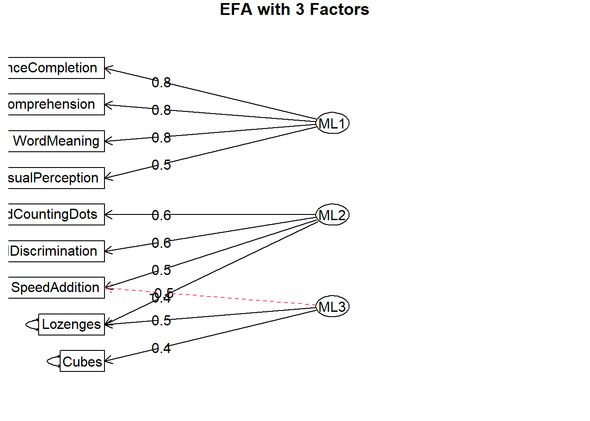
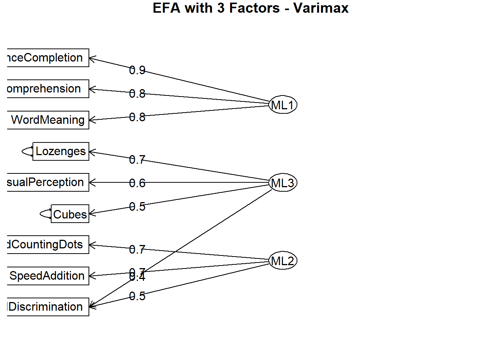
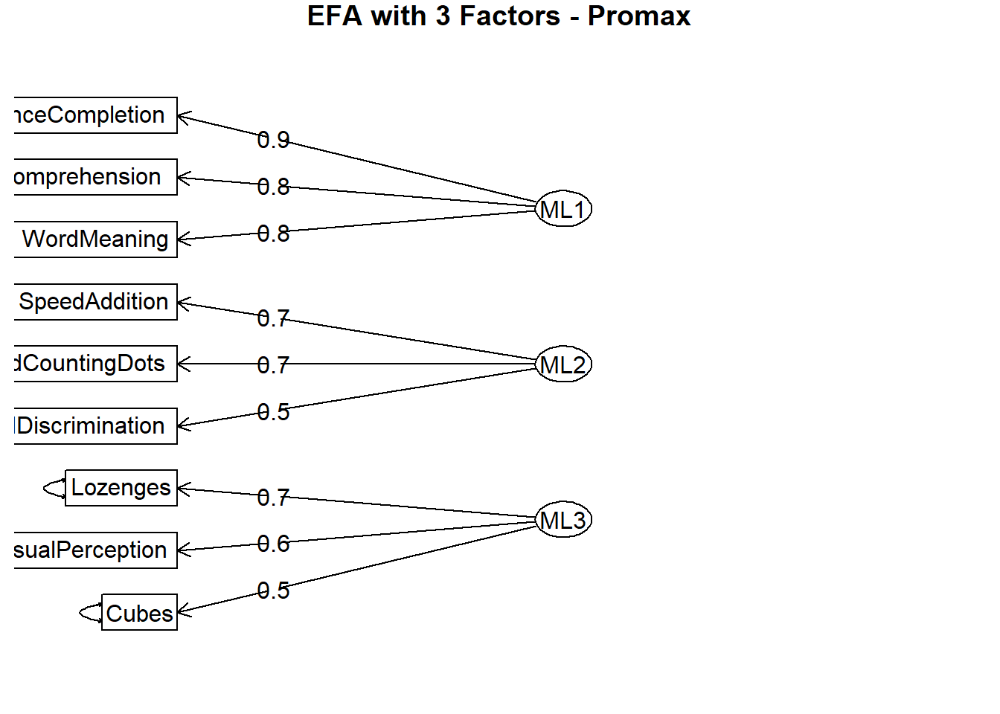
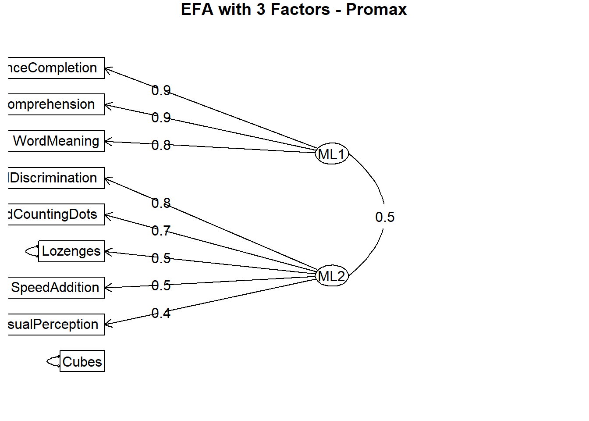

Just by looking at the tests, you can see they are designed to assess three kinds of abilities: visual perception, verbal comprehension, and processing speed. Each construct is measured by three different tests — a strategy known as triangulation. This is important because someone might be very skilled at identifying 2D shapes but less adept at perceiving 3D spatial relations. Yet both skills are part of the broader construct of visual perception. Similarly, one test may be noisier for certain individuals than another. By including multiple tests per construct, we reduce the influence of measurement error and obtain a more reliable estimate of the underlying ability.
PCA vs EFA
Before diving in, it’s important to note that EFA and PCA often yield similar results, especially when applied to correlation matrices. In both methods, we aren’t concerned with the absolute values of test scores; what matters are the relationships between scores — in other words, the correlations, not the raw data.
However, PCA and EFA serve different purposes:
PCA is a data reduction technique that aims to summarize as much of the total variance in the dataset as possible using fewer dimensions (principal components). The problem in psychological measurement is that test scores often include noise, and PCA does not separate that noise — it includes all variance, whether meaningful or not.
EFA, on the other hand, is designed to identify latent constructs — the unobserved traits or abilities that underlie the measured variables. It explicitly models measurement error, separating common variance (from latent factors) from unique variance (including noise).
You can think of PCA and EFA as different tools — like a ratchet and a wrench. Both are useful, but one may be better suited to a given situation.
Let’s start by running a PCA to demonstrate how components are constructed as linear combinations of the original variables.
Focus on the loadings. Here, 9 variables are represented by 3 components. Squint a little, you can see there are 3 unique measurements loaded on each PCs
You can look at each participant’s PC score, but PC scores are not truthful
you can also calculate the PC scores by multiplying the weights with the data essentially, for each subj’s PC scores, you multiply each variable with its corresponding weight, then sum them together. This is a more explicit calculation that results in the same thing as above This shows that the original data can PERFECTLY reproduce the PC scores.
# Manually compute PC scoreshead(scale(ability_data) %*% pca_res$weights)
Naturally, when we reduce dimensionality, we can’t perfectly reproduce the original data. The key takeaway is that principal component (PC) scores are calculated by multiplying the standardized data by the component weights, while the original data can be approximately reconstructed by multiplying PC scores by the loadings. It’s important not to confuse loadings with weights.
PCA on a Correlation Matrix
Keep in mind that it is the relationships between the measurement that matters in PCA. Not the raw data. You can put a correlation matrix of the data in this function and it will give you the same results.
Although PCA scores may seem useful, it’s usually not ideal to use them as psychological scales, because they include all variance — including measurement error. In psychological testing, where measurements are rarely noise-free, this can be a serious issue. Unless your measurements are as precise as a ruler, it’s better to use a method that models measurement error explicitly. That’d be Factor Analysis. The family FA comes in Exploratory Factor Analysis (EFA), EFA with target rotation, Item Response Theory (IRT), Confirmatory Factor Analysis (CFA), Structural Equation Modeling (SEM- obviously the pinnacle of statistic modeling)… That I am aware of. Ordered from the most exploratory to the most confirmatory methods (In my opinion).
Here, we will run Exploratory Factor Analysis (EFA) to identify the underlying constructs.
Exploratory Factor Analysis (EFA)
PCA generates principal components directly from the data in a single algebraic step (Eigendecomposition). All variance are absorbed by the PCs.
Factor Analysis (FA), on the other hand, assumes that the data are generated from latent factors, and then tries to estimate both the factors and the factor loadings iteratively, such that the reconstructed data matches the observed correlations as closely as possible. Here, variances are separated into common variance (shared by the factors, interpreted as variance caused by latent constructs) and unique variance (specific to each variable, interpreted as variances caused by measurement error).
In EFA, we are not testing any model. We let the model build itself from the data.
# Run the EFA with 3 factorsefa_res <-fa(cor_mat, nfactors =3, rotate ="none", fm ="ml", covar =FALSE)print(efa_res, digits =2)
Factor Analysis using method = ml
Call: fa(r = cor_mat, nfactors = 3, rotate = "none", covar = FALSE,
fm = "ml")
Standardized loadings (pattern matrix) based upon correlation matrix
ML1 ML2 ML3 h2 u2 com
VisualPerception 0.49 0.31 0.39 0.49 0.51 2.7
Cubes 0.24 0.17 0.40 0.25 0.75 2.1
Lozenges 0.27 0.41 0.47 0.46 0.54 2.6
ParagraphComprehension 0.83 -0.15 -0.03 0.72 0.28 1.1
SentenceCompletion 0.84 -0.21 -0.10 0.76 0.24 1.2
WordMeaning 0.82 -0.13 0.02 0.69 0.31 1.0
SpeedAddition 0.23 0.48 -0.46 0.50 0.50 2.4
SpeedCountingDots 0.27 0.62 -0.27 0.53 0.47 1.8
SpeedDiscrimination 0.38 0.56 0.02 0.46 0.54 1.8
ML1 ML2 ML3
SS loadings 2.72 1.31 0.82
Proportion Var 0.30 0.15 0.09
Cumulative Var 0.30 0.45 0.54
Proportion Explained 0.56 0.27 0.17
Cumulative Proportion 0.56 0.83 1.00
Mean item complexity = 1.8
Test of the hypothesis that 3 factors are sufficient.
df null model = 36 with the objective function = 3.05
df of the model are 12 and the objective function was 0.08
The root mean square of the residuals (RMSR) is 0.02
The df corrected root mean square of the residuals is 0.03
Fit based upon off diagonal values = 1
Measures of factor score adequacy
ML1 ML2 ML3
Correlation of (regression) scores with factors 0.95 0.86 0.78
Multiple R square of scores with factors 0.90 0.73 0.60
Minimum correlation of possible factor scores 0.80 0.46 0.21
# Factor structure diagramfa.diagram(efa_res, simple =FALSE, main ="EFA with 3 Factors", errors =TRUE, cut= .4)

The output shows the factor loadings, which indicate how much each variable is associated with each factor. The higher the loading, the more that factor explain the manifest variable. Unlike PCA, where arrows point from observed data to components, in FA, arrows point from factors to observed variables. This is because we are assuming that the factors are the cause of the observed variables. And therefore, we call the numbers on the arrows loadings, instead of weights.
Overall, a pretty clear picture that: VisualPerception, Cubes, and Lozenges are all related to the same underlying factor. (Call it the Visual factor) SpeedAddition, SpeedCountingDots, and SpeedDiscrimination are all related to another factor.(Call it the Speed factor) ParagraphComprehension, SentenceCompletion, and WordMeaning are all related to a third factor. (Call it the Verbal factor)
There also seems to be some cross loadings such as Lozenges scores (Mental rotation) being influenced by the second factor (Speed factor). Not suprising because Response Time scales with how much an object is rotated in such tasks.
The residual matrix in EFA contains the VARIANCE of the residuals on the diagonal and the CORRELATION between the residuals on the off-diagonal. Ideally, these residual correlations should be low. High residual correlations suggest that the current factor model isn’t fully capturing the structure in the data. Meaning there may be additional latent factors that haven’t been modeled. For example, observed variables measured using similar formats (like pen-and-paper tests) may share variance due to shared method or modality, rather than due to the underlying psychological construct.
Factor Rotation
A common practice in Exploratory Factor Analysis (EFA) is to rotate the factors after the initial solution is extracted. Rotation doesn’t change the underlying model or its fit. It only re-expresses the factor loadings to make them more interpretable. This step is performed after estimating the factor model, and its goal is to achieve what’s known as simple structure — a pattern in which each variable loads strongly on one factor and weakly on others. This makes it easier to assign meaningful labels to factors. Some rotation methods, like varimax, keep the factors uncorrelated (orthogonal), while others, like promax, allow them to correlate.
You might wonder why it’s okay to change the loadings after the model is fitted. A helpful analogy is to imagine the factor solution as a 3D object that’s been learned from the correlation matrix. The object doesn’t change, but you can view it from different angles. Each angle gives a different projection — and these projections are the rotated loadings.
Factor Analysis using method = ml
Call: fa(r = cor_mat, nfactors = 3, rotate = "varimax", covar = FALSE,
fm = "ml")
Standardized loadings (pattern matrix) based upon correlation matrix
ML1 ML3 ML2 h2 u2 com
VisualPerception 0.28 0.62 0.15 0.49 0.51 1.5
Cubes 0.10 0.49 -0.03 0.25 0.75 1.1
Lozenges 0.03 0.66 0.13 0.46 0.54 1.1
ParagraphComprehension 0.83 0.16 0.10 0.72 0.28 1.1
SentenceCompletion 0.86 0.09 0.09 0.76 0.24 1.0
WordMeaning 0.80 0.21 0.09 0.69 0.31 1.2
SpeedAddition 0.09 -0.07 0.70 0.50 0.50 1.1
SpeedCountingDots 0.05 0.16 0.71 0.53 0.47 1.1
SpeedDiscrimination 0.13 0.41 0.52 0.46 0.54 2.0
ML1 ML3 ML2
SS loadings 2.18 1.34 1.33
Proportion Var 0.24 0.15 0.15
Cumulative Var 0.24 0.39 0.54
Proportion Explained 0.45 0.28 0.27
Cumulative Proportion 0.45 0.73 1.00
Mean item complexity = 1.2
Test of the hypothesis that 3 factors are sufficient.
df null model = 36 with the objective function = 3.05 0.3
df of the model are 12 and the objective function was 0.08
0.3
The root mean square of the residuals (RMSR) is 0.02
The df corrected root mean square of the residuals is 0.03
0.3
Fit based upon off diagonal values = 1
Measures of factor score adequacy
ML1 ML3 ML2
Correlation of (regression) scores with factors 0.93 0.81 0.84
Multiple R square of scores with factors 0.87 0.66 0.70
Minimum correlation of possible factor scores 0.74 0.33 0.40
fa.diagram(efa_varimax, simple =FALSE, cut =0.4, main ="EFA with 3 Factors - Varimax", errors =TRUE)

Varimax maximizes the variance of squared loadings per factor.
Produces a higher contrasted loading patterns, but forces factors to be uncorrelated.
Factor Analysis using method = ml
Call: fa(r = cor_mat, nfactors = 3, rotate = "promax", covar = FALSE,
fm = "ml")
Standardized loadings (pattern matrix) based upon correlation matrix
ML1 ML2 ML3 h2 u2 com
VisualPerception 0.15 0.04 0.61 0.49 0.51 1.1
Cubes 0.01 -0.12 0.52 0.25 0.75 1.1
Lozenges -0.11 0.03 0.70 0.46 0.54 1.1
ParagraphComprehension 0.84 0.00 0.01 0.72 0.28 1.0
SentenceCompletion 0.90 0.01 -0.08 0.76 0.24 1.0
WordMeaning 0.81 -0.01 0.07 0.69 0.31 1.0
SpeedAddition 0.04 0.74 -0.21 0.50 0.50 1.2
SpeedCountingDots -0.05 0.72 0.05 0.53 0.47 1.0
SpeedDiscrimination 0.01 0.48 0.34 0.46 0.54 1.8
ML1 ML2 ML3
SS loadings 2.21 1.33 1.32
Proportion Var 0.25 0.15 0.15
Cumulative Var 0.25 0.39 0.54
Proportion Explained 0.46 0.27 0.27
Cumulative Proportion 0.46 0.73 1.00
With factor correlations of
ML1 ML2 ML3
ML1 1.00 0.26 0.39
ML2 0.26 1.00 0.35
ML3 0.39 0.35 1.00
Mean item complexity = 1.1
Test of the hypothesis that 3 factors are sufficient.
df null model = 36 with the objective function = 3.05 0.3
df of the model are 12 and the objective function was 0.08
0.3
The root mean square of the residuals (RMSR) is 0.02
The df corrected root mean square of the residuals is 0.03
0.3
Fit based upon off diagonal values = 1
Measures of factor score adequacy
ML1 ML2 ML3
Correlation of (regression) scores with factors 0.94 0.86 0.85
Multiple R square of scores with factors 0.89 0.74 0.72
Minimum correlation of possible factor scores 0.78 0.47 0.44
fa.diagram(efa_promax, simple =FALSE, cut =0.4, main ="EFA with 3 Factors - Promax", errors =TRUE)

Promax rotation is very similar to varimax at first. It begins by performing a varimax rotation, where the loadings are adjusted to maximize the variance within each factor.
After this, the loadings are raised to a power, which exaggerates the differences: large loadings become much larger, while small ones remain relatively small. This artificially boosts the contrast and creates a target loading matrix. This set of loadings is not attainable by the model, but can serve as a target to optimize for.
In the final step, the model lifts the orthogonality requirement, allowing the factors to correlate, and rotates the solution again to come as close as possible to this target structure. In short, promax increases loading contrast even further than varimax, but does so by allowing factor correlation, making it more realistic for psychological data.
Model identification and the trap of factor Scores
Something worth mentioning is that, while you can use efa_promax$scores to get the factor scores, these scores are not valid. This is because usually, there are multiple solutions to the model (Multiple sets of factor scores and loadings) that produce the same correlation matrix. These factor scores also change when you select different rotations. So don’t use the factor scores as an indicator of a subject’s ability.
Fitting the model with other number of factors
Since we know the measurements were designed to have 3 factors in mind, we ran with 3 factors first. However, some times we don’t know the number of factors. Try 2 factors here.
Factor Analysis using method = ml
Call: fa(r = cor_mat, nfactors = 2, rotate = "promax", covar = FALSE,
fm = "ml")
Standardized loadings (pattern matrix) based upon correlation matrix
ML1 ML2 h2 u2 com
VisualPerception 0.23 0.43 0.327 0.67 1.5
Cubes 0.09 0.25 0.094 0.91 1.3
Lozenges -0.01 0.47 0.217 0.78 1.0
ParagraphComprehension 0.87 -0.04 0.726 0.27 1.0
SentenceCompletion 0.89 -0.08 0.736 0.26 1.0
WordMeaning 0.84 -0.01 0.698 0.30 1.0
SpeedAddition -0.05 0.46 0.198 0.80 1.0
SpeedCountingDots -0.12 0.65 0.370 0.63 1.1
SpeedDiscrimination -0.05 0.76 0.542 0.46 1.0
ML1 ML2
SS loadings 2.27 1.63
Proportion Var 0.25 0.18
Cumulative Var 0.25 0.43
Proportion Explained 0.58 0.42
Cumulative Proportion 0.58 1.00
With factor correlations of
ML1 ML2
ML1 1.00 0.45
ML2 0.45 1.00
Mean item complexity = 1.1
Test of the hypothesis that 2 factors are sufficient.
df null model = 36 with the objective function = 3.05 0.3
df of the model are 19 and the objective function was 0.43
0.3
The root mean square of the residuals (RMSR) is 0.09
The df corrected root mean square of the residuals is 0.12
0.3
Fit based upon off diagonal values = 0.93
Measures of factor score adequacy
ML1 ML2
Correlation of (regression) scores with factors 0.94 0.87
Multiple R square of scores with factors 0.89 0.75
Minimum correlation of possible factor scores 0.78 0.50
fa.diagram(efa_promax, simple =FALSE, cut =0.4, main ="EFA with 3 Factors - Promax", errors =TRUE)

The loadings are blurry in this case. The cubes measure doesn’t load onto any factor strongly.